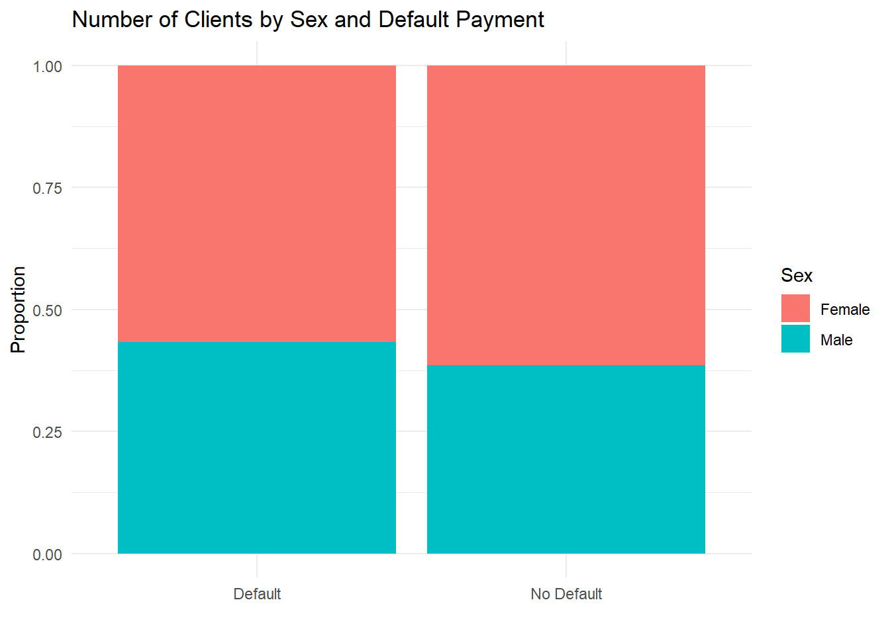

library(tidyverse)
library(janitor)
library(broom)Analítica de Datos
Predicting Bank Loan Default
Preliminares
Context
A bank has hired us to predict the probability that a client will default on their payment.
We have two datasets:
- Demographic information - September (
credit_demographics.csv)
ID: ID of each clientLIMIT_BAL: Amount of given credit in dollars (includes individual and family/supplementary credit.SEX: Gender (1=male, 2=female).EDUCATION: Education level (1=graduate school, 2=university, 3=high school, 4=others, 5=unknown, 6=unknown).MARRIAGE: Marital status (1=married, 2=single, 3=others)AGE: Age in years.DEFAULT: Default payment status (1=yes, 0=no).
- Repayment information - April to September (
credit_payments.csv)
id: ID of each client.month: month of the information.`repayment_status``: Repayment status for that month (-1=pay duly, 1=payment delay for one month, 2=payment delay for two months, … 8=payment delay for eight months, 9=payment delay for nine months and above).
payment_amount: Amount of payment in that month.
The objective of the task is to answer the following questions:
How does the probability of default payment vary by categories of different demographic variables?
Which variables are the strongest predictors of default payment?
We will address these questions step by step using graphs, descriptive statistics, confidence intervals, and regression analysis. For your final assignment, you are expected to follow a similar approach.
Instructions
Many of you have been running the code directly within the Quarto document. For this assignment, I will ask you to proceed as follows:
- Write all the code required to solve the exercises in a separate
R script. Do not include any answers in this file, but make sure to add comments indicating the exercise number, like this:
# Exercise 1
Whatever code you use for solving Exercise 1
# Exercise 2
Whatever code you use for solving Exercise 2
Start with this step, as it will make it easier to copy the code into the Quarto document later.
In a separate
PDFcreated with Quarto, provide your answers and visualizations (e.g., plots). Do not include any of their codes in this document. However, regression outputs and other results should be included in thePDF, along with their respective code.Please submit both the
R scriptand thePDFfile when you are done. The file names should follow the usual format:name_lastname.
As always, feel free to ask me any questions that may arise during the class.
Exercise 1
Let’s load our usual packages first:
Import both datasets into R. Name the dataset containing the demographic information credit_demo and the dataset with the payment and debt status credit_pay (both datasets are in .csv format not in Excel).
Use the glimpse() function to inspect the variables and their data types for both datasets. How many clients do we have in the credit_demo dataset?
Exercise 2
So far, we have worked with datasets where each row represents a single observation. However, if you use the View() function with the credit_pay dataset, you will notice that there are multiple rows per observation. Each row corresponds to a client’s payment status or amount for a specific month.
In contrast, the credit_demo dataset contains one row per client (confirm this with View() as well). To merge both datasets, we need to restructure credit_pay so that each client has only one row, similar to credit_demo.
To achieve this, we need to rearrange the data using a process called pivoting. Please review this resource, as pivoting is a crucial part of data cleaning and preparation.
credit_pay <- credit_pay %>%
pivot_wider(
names_from = month, # Use month as the new column names
values_from = c(repayment_status, payment_amount), # Specify which columns to widen
names_sep = "_" # Separator for new column names
)Check the new structure of the dataset using the View() function. Now, each row represents a single observation as intended.
Exercise 3
We need to merge the information from the credit_pay dataset with credit_demo. You could also do it the other way around since both datasets have the same number of observations.
Check this website to learn about joining multiple datasets, as it will be useful for future tasks.
The following code chunk demonstrates how to use the left_join() function to combine the datasets:
final_data <- left_join(credit_demo, credit_pay)Oops! There’s a problem with the code above, and it’s a common one. The key variable used to merge the datasets does not have the same name in both datasets. In credit_pay, the variable is named id, while in credit_demo, it is named ID.
The following code fixes this issue by renaming the key variable:
credit_pay <- credit_pay %>%
rename(ID = id)Now, we can merge both datasets:
final_data <- left_join(credit_demo, credit_pay)
# We can remove the original datasets for now with the rm() function
rm(credit_demo, credit_pay)In this case, removing the initial datasets is harmless, but in certain situations, you might want to keep them for future analysis.
At this point, you should have the following output:
glimpse(final_data)Rows: 30,000
Columns: 19
$ ID <dbl> 1, 2, 3, 4, 5, 6, 7, 8, 9, 10, 11, 12, 13, ~
$ LIMIT_BAL <dbl> 20000, 120000, 90000, 50000, 50000, 50000, ~
$ SEX <dbl> 2, 2, 2, 2, 1, 1, 1, 2, 2, 1, 2, 2, 2, 1, 1~
$ EDUCATION <dbl> 2, 2, 2, 2, 2, 1, 1, 2, 3, 3, 3, 1, 2, 2, 1~
$ MARRIAGE <dbl> 1, 2, 2, 1, 1, 2, 2, 2, 1, 2, 2, 2, 2, 2, 2~
$ AGE <dbl> 24, 26, 34, 37, 57, 37, 29, 23, 28, 35, 34,~
$ DEFAULT <dbl> 1, 1, 0, 0, 0, 0, 0, 0, 0, 0, 0, 0, 0, 1, 0~
$ repayment_status_september <dbl> 2, -1, 0, 0, -1, 0, 0, 0, 0, -2, 0, -1, -1,~
$ repayment_status_august <dbl> 2, 2, 0, 0, 0, 0, 0, -1, 0, -2, 0, -1, 0, 2~
$ repayment_status_july <dbl> -1, 0, 0, 0, -1, 0, 0, -1, 2, -2, 2, -1, -1~
$ repayment_status_june <dbl> -1, 0, 0, 0, 0, 0, 0, 0, 0, -2, 0, -1, -1, ~
$ repayment_status_may <dbl> -2, 0, 0, 0, 0, 0, 0, 0, 0, -1, 0, -1, -1, ~
$ repayment_status_april <dbl> -2, 2, 0, 0, 0, 0, 0, -1, 0, -1, -1, 2, -1,~
$ payment_amount_september <dbl> 0, 0, 1518, 2000, 2000, 2500, 55000, 380, 3~
$ payment_amount_august <dbl> 689, 1000, 1500, 2019, 36681, 1815, 40000, ~
$ payment_amount_july <dbl> 0, 1000, 1000, 1200, 10000, 657, 38000, 0, ~
$ payment_amount_june <dbl> 0, 1000, 1000, 1100, 9000, 1000, 20239, 581~
$ payment_amount_may <dbl> 0, 0, 1000, 1069, 689, 1000, 13750, 1687, 1~
$ payment_amount_april <dbl> 0, 2000, 5000, 1000, 679, 800, 13770, 1542,~Exercise 4
Clean the names of the variables with the janitor package as follows:
final_data <- final_data %>%
clean_names()Exercise 5
It is generally preferable to have categorical variables as string characters rather than numeric values. The following code creates string variables that correspond to the names of the categories:
final_data <- final_data %>%
mutate(
default_string = case_when(
default == 1 ~ "Default",
default == 0 ~ "No Default",
TRUE ~ NA_character_ # Assign NA for any unmatched values
),
sex_string = case_when(
sex == 1 ~ "Male",
sex == 2 ~ "Female",
TRUE ~ NA_character_ # Assign NA for any unmatched values
),
education_string = case_when(
education == 1 ~ "Graduate School",
education == 2 ~ "University",
education == 3 ~ "High School",
education == 4 ~ "Others",
education == 5 ~ "Unknown",
education == 6 ~ "Unknown",
TRUE ~ NA_character_ # Assign NA for any unmatched values
)
)Create a variable called marriage_string based on the marriage variable using a similar approach as shown above.
Exercise 6
Since we are tasked with predicting the probability of default payment, it is important to visualize the proportion of clients who default. The following code accomplishes this:
ggplot(final_data, aes(x = default_string)) +
geom_bar() +
labs(title = "Number of Clients by Default Payment",
x = "",
y = "Frequency") +
scale_y_continuous(limits = c(0, 30000)) +
theme_minimal()Combine the function summarise() and the function n() to compute the exact figures like this:
final_data %>%
group_by(default_string) %>%
summarise(total_clients = n())How many clients in our dataset are in default, and how many are not?
Exercise 7
To create a demographic profile of clients who are in default, plot the proportion of clients by sex within each default category:
ggplot(final_data, aes(fill=sex_string, x=default_string)) +
geom_bar() +
labs(title = "Number of Clients by Sex and Default Payment",
fill='Sex',
x = "",
y = "Frecuency") +
theme_minimal()We have seen this type of graph before, but it does not provide a clear picture of the proportions across default status. Instead, use the fill option within the geom_bar to create a more informative version of the plot:
ggplot(final_data, aes(fill=sex_string, x=default_string)) +
geom_bar(position="fill") +
labs(title = "Number of Clients by Sex and Default Payment",
fill='Sex',
x = "",
y = "Proportion") +
theme_minimal()
This plot indicates that the composition within each default status may not differ significantly. However, we should confirm this, as sex could be an important predictor of whether a client defaults.
Exercise 8
Estimate the following regression equation and call it model_1:
\[\widehat{\text{Default}}=\hat{\beta_0}+\hat{\beta_1}\times \text{Female}\]
Use the tidy function to display the results and analyze them. Are these results consistent with the graph from Exercise 7?
Exercise 9
Repeat Exercise 7 for the variable marriage. Provide a brief summary of the plot.
Exercise 10
Estimate the following regression:
\[\widehat{\text{Default}}=\hat{\beta_0}+\hat{\beta_1}\times \text{Single}+\hat{\beta_2}\times \text{Others}\]
Are the coefficients alligned with the plot in Exercise 9?
Exercise 11
Analyze the variable of given credit (limit_bal). Plot its density and provide summary statistics to aid in your analysis.
Exercise 12
We are analyzing a sample of clients. What is the range within which the true average credit amount is likely to fall? Use the t.test() function to compute a 95% confidence interval.
Exercise 13
Perform the same analysis for the average fraction of female clients. What are the lower and upper bounds of the confidence interval?
Exercise 14
Plot the relationship between the given credit and age. Do you observe any clear pattern or trend?
Exercise 15
Estimate a linear regression to predict the probability of being in default using all demographic variables. Are all predictors significant at the 5% level?
Exercise 16
Interpret the significant coefficients from the regression model in Exercise 15. You may choose to analyze them one by one for clarity or provide a general description of which groups appear to be good predictors of the probability of being in default.
Exercise 17
Delete all variables related to payment_amount and repayment_status except for those corresponding to September.
Exercise 18
Plot the relationship between given credit (limit_bal) and payment amount in September. Do you observe any clear pattern or trend? Additionally, analyze the relationship between the logs of both variables.
Exercise 19
What is the elasticity of the payment in September based on the total amount of credit (limit_bal)? To find this, estimate a log-log regression model.